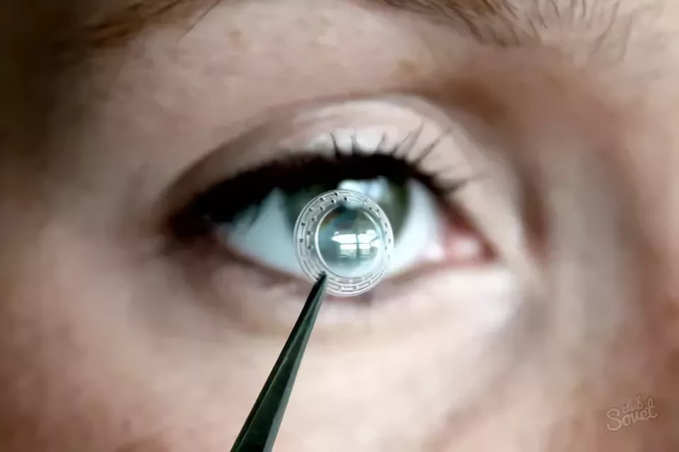
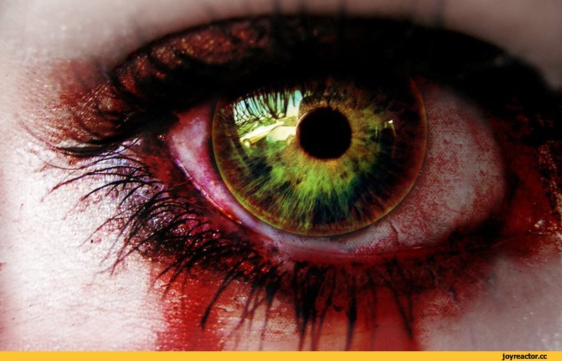
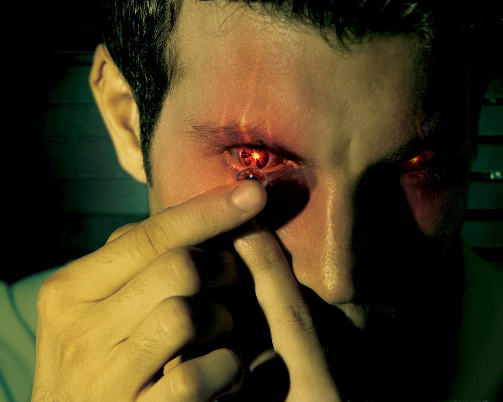
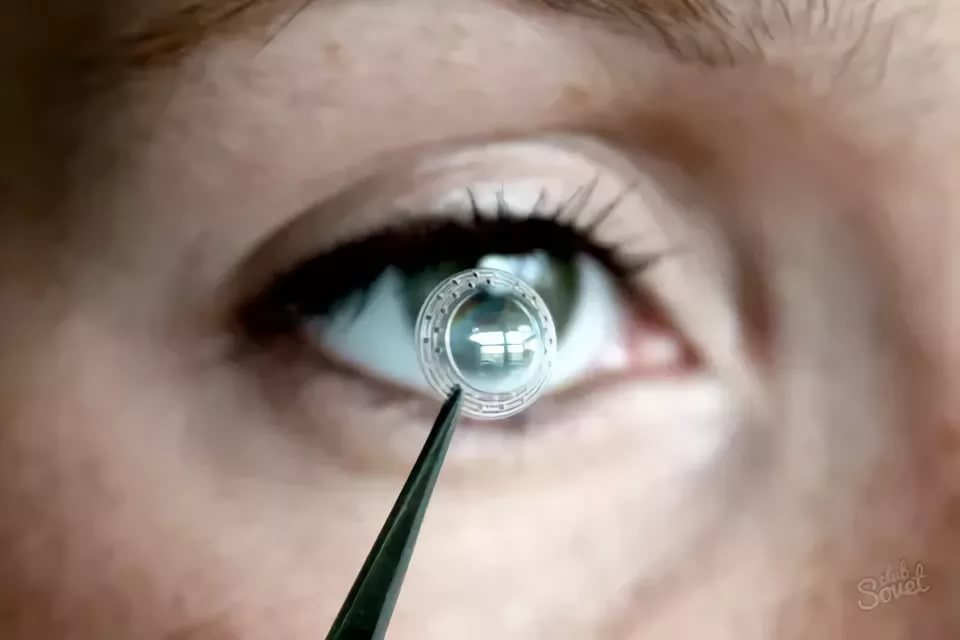
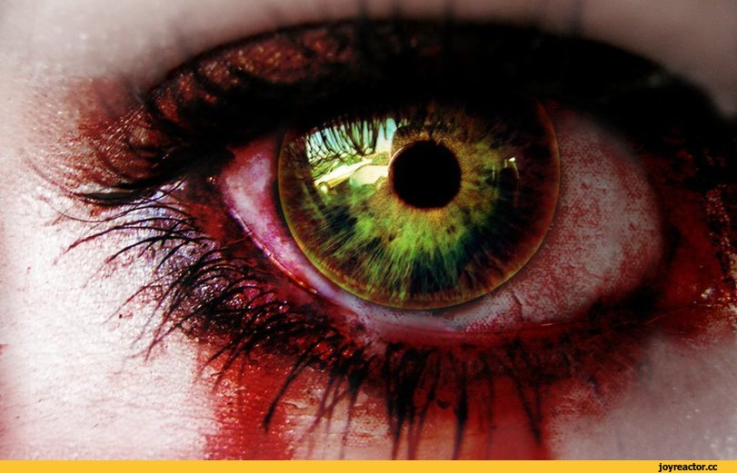
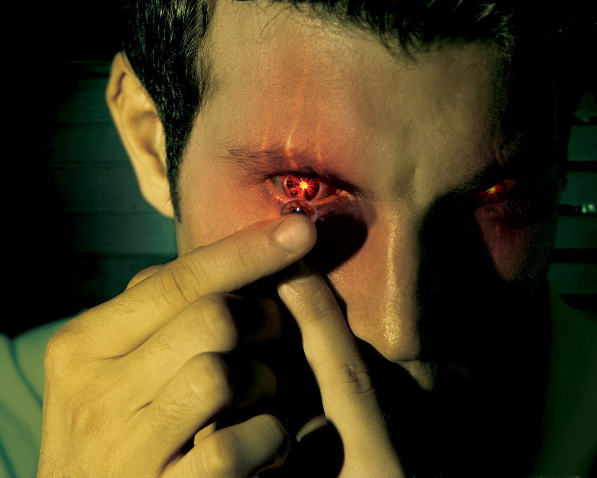

Көз аурулары
Көз аурулары – көздің көруінің нашарлауынан, оның сәуле сындыру күшінің ақауларынан (алыстан көргіштік, алыстан көрмеушілік, астигматтық, дальтонизм) пайда болатын және іштен туа біткен аурулар. Кейінгі жылдары іштен туа біткен ауру – су қараңғы (глаукома) мен көз жарақаттары жиі кездеседі. Көз ауруларының пайда болуына мехникалық (әр түрлі жарақаттар алу, т.б.), физикалық (шаң-тозаң, үшнитротолуол тозаңдары мен булары, т.б.), химиялық (күкіртті сутек, мышьяк, т.б. әсері) және физикалық-химиялық (ультракүлгін, инфрақызыл сәулелер, жарық, т.б.) факторлар әсер етеді.
Көз ауруларының жиі кездесетін түрлері:
- басыр;
- бленнорея;
- катаракта;
- коньюктивит;
- көзге ақ түсу;
Көзге ақ түсу, лейкома (leu coma corneae) – көздің қасаң қабығының ауруы. Бұл, көбінесе, жарақаттанудан, қабынудан, көзге шыққан түрлі жарадан болады. Қызылша, шешек, туберкулез ауруларының асқынуынан қасаң қабықта ақ дақ пайда болып, ол кейде біртіндеп бітуі мүмкін. Мұның салдарынан көздің көруіне нұқсан келеді . Көздің көруі қасаң қабықтың қай жеріне ақ түскеніне, оның көлеміне байланысты. Егер ақ қарашыққа түссе, адам көрмей қалады. Көзге түскен ақ дәрі-дәрмекке жазылмаса, оған хирургиялық операция жасалады. Ішкі органдар мен жүйелердің аурулары да Көз ауруларына әкеледі. Мысалы, қоян көз, бадырақ көз, Аргайлл Робертсон белгісі, т.б. Емделмеген Көз аурулары көздің көруін нашарлатып, соқырлыққа да әкелуі мүмкін.
Дальтонизм - көздің көру қабілетінің бұзылуы нәтижесінде түсті ажырата алмаушылық. Түсті бірқалыпты сезетін адам негізгі үш түсті (қызыл, жасыл және көк) қабылдай алады (Көру мақаласын қараңыз). Дальтонизмге шалдыққан адамның қызыл және жасыл түстерді сезінуі төмендейді немесе мүлде жойылады, соның салдарынан айналадағы әлемнің түрлі-түсті көріністерін теріс қабылдайды. Көк түске сезімталдықтың кемуі өте сирек байқалады. Түсті мүлде айыра алмаушылықты түс танымау деп атайды; мұндайда айналадағы барлық заттар қара-ақ реңді болып қабылданады.
Дальтонизм туа біткен және жүре біткен болып бөлінеді. Туа біткен дальтонизм ерлерде тұқым қуалайды. Жүре біткен дальтонизм көздің немесе орталық нерв жүйесінің ауруға шалдығуынан болады, сондықтан түсті ажырата алмау белгісі байқалған жағдайда дереу көз дәрігеріне қаралған жөн. Дальтонизмде тағы бір ескеретін жайт: түс айыру кемістік ұзақ уақыт бойына сол ауру адамның өзіне де, оның маңайындағыларға да байқалмауы мүмкін. Дальтонизмге шалдыңқап адамдарда бірте-бірте түстің ашықтығына қарай ажырата білу қабілеті пайда болады. Адамдардың түсті айыра білуін тексеріп отырудың практикалық, әсіресе кәсіптік тұрғыдан айрықша маңызы бар. Өйткені түсті дұрыс айыра білмеу. бақытсыз жағдайға ұшыратуы мүмкін
СУҚАРАҢҒЫ, глаукома – көздің ішкі қысымының жоғары көтерілуінен болатын созылмалы көз ауруы. Гиппократ “glaukosіs”, ал Аристотель “glaukoma” деп атауды ұсынған, аурудың осылай аталуы 19 ғ-дың 60 – 70-жылдарынан қолданысқа енді. Көздің ішкі қысымы белгілі бір деңгейде (орталық мөлшері 14 – 16 мм сын. бағ., 26 мм сын. бағ. болса, Суқараңғы ауруына шалдығады) көздің ішкі сұйықтығының циркуляциясын реттеп отырады. Көздің қан тамырлары мен оған келетін жүйкелер қызметінің бұзылуынан көз сұйықтығының циркуляциясы нашарлап, көзден жас шығу қиындайды. Соның нәтижесінде сұйықтық жиналып, көз ішілік қысымның жоғарылауына әкеледі. Бұл көздің қалыпты жағдайдағы жұмысын төмендетіп, көздің торлы қабығына келетін жүйкелердің жұмысы бұзылады. Егер дер кезінде емделмесе, адамның көру қабілеті нашарлап, тіпті соқырлыққа да әкелуі мүмкін. Суқараңғы 40 – 50 жастағы адамдар арасында пайда болады, кей жағдайларда жас балаларда (іштен туа біткен) және жасөспірімдерде кездеседі. Аурудың бастапқы кезеңінде көздің алды тұманданып, жарыққа қарағанда, “кемпірқосақты” көргендей белгілер байқалады. Науқас көз алдындағы затты анық көре алмайды. Бұл белгілер әуелі бір көзде байқалады. Әсіресе, таңертеңгілікте 1 – 3 сағаттай көз, самай және маңдай тұсын бір нәрсе қысып тұрғандай әсер байқалады. Суқараңғы аяқ астынан да дамуы мүмкін. Бұл кезде бір жақ көз, бас қатты ауырады. Науқастың көзі қызарып, қабағы ісінеді, көру қабілеті төмендейді. Кейде адамның жүрегі айнып, құсады. Аурудың алдын алу үшін 40 жастан асқан адамдар жылына 1 рет көз қысымын тексертіп тұруы қажет. Суқараңғы жұқпалы ауру емес, бірақ тұқым қуалауы мүмкін. Емі: көздің қарашығын тарылтатын дәрілер (пилокарпин, карбахолин, прозерин, демекария бромиді, клофилин (изоглаукон), т.б. қабылдау керек. Режим (8 сағат түнгі ұйқы, дұрыс тамақтану, оқығанда, жазғанда, теледидар көргенде жарықтың дұрыс түсуі, т.б.) қатаң сақталуы қажет. Дәрі-дәрмекпен емдеу көмектеспесе хирургиялық операция жасалады
Жаңа технологиялардың көзге әсері
Офтальмологтар соңгы уақытта балалар арасында да көз ауруларының көбейіп бара жатқандығын айтып дабыл қағуда. Бұл келеңсіздікті жылдан жылға артуына әрине ата-ананың өз баласының денсаулығына жауапкершілікпен қарамауы ықпал етіп келеді. Мәселен, ата-ана өзінің құлағы тыныш болын ойлап, баланың теледидар алдында сағаттап отыруына жол береді. Мұнан бөлек , жасөспірімдер компютерде ойындар ойнайды, ұялы телефон, планшетпен сағаттар бойы отыратыны жасырын емес. Күні-түні телефонға , теледидарға, кмпьютерге үңілген баланың көзі тек жақыннан жақсы көруге қалыптасады. нәтижесінде алыстан көрмеушілік дерті пайда болады.
 




